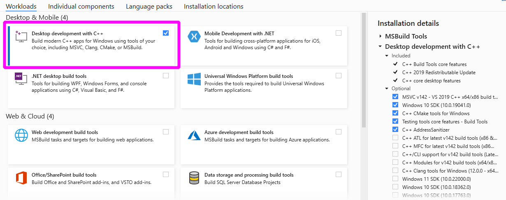

تثبيت نسخة التطوير من scikit-learn#
يقدم هذا القسم طريقة تثبيت الفرع الرئيسي من scikit-learn. يمكن القيام بذلك إما عن طريق تثبيت نسخة ليلية أو البناء من المصدر.
تثبيت النسخ الليلية#
تقوم خوادم التكامل المستمر لمشروع scikit-learn ببناء واختبار وتحميل حزم العجلات لأحدث إصدار من Python بشكل يومي.
تثبيت نسخة ليلية هي أسرع طريقة للقيام بما يلي:
تجربة ميزة جديدة سيتم شحنها في الإصدار التالي (أي ميزة من طلب سحب تم دمجها مؤخرًا في الفرع الرئيسي).
التحقق مما إذا كان قد تم إصلاح خطأ واجهته منذ الإصدار الأخير.
يمكنك تثبيت النسخة الليلية من scikit-learn باستخدام الفهرس scientific-python-nightly-wheels من سجل PyPI على anaconda.org:
pip install --pre --extra-index https://pypi.anaconda.org/scientific-python-nightly-wheels/simple scikit-learn
ملاحظة: قد يكون من الضروري أولاً إلغاء تثبيت scikit-learn للتمكن من تثبيت النسخ الليلية من scikit-learn.
البناء من المصدر#
البناء من المصدر مطلوب للعمل على مساهمة (إصلاح خطأ، ميزة جديدة، تحسين التعليمات البرمجية أو الوثائق).
استخدم Git للاطلاع على أحدث مصدر من مستودع scikit-learn على Github.:
git clone git@github.com:scikit-learn/scikit-learn.git # add --depth 1 if your connection is slow cd scikit-learn
إذا كنت تخطط لإرسال طلب سحب، فيجب عليك الاستنساخ من الشوكة الخاصة بك بدلاً من ذلك.
قم بتثبيت إصدار حديث من Python (3.9 أو أحدث في وقت الكتابة) باستخدام Miniforge3. يوفر Miniforge توزيعًا يعتمد على conda لـ Python وأكثر المكتبات العلمية شيوعًا.
إذا قمت بتثبيت Python باستخدام conda، فنحن نوصي بإنشاء بيئة
condaمخصصة بجميع تبعيات البناء لـ scikit-learn (أي NumPy، SciPy، Cython، meson-python وNinja_):conda create -n sklearn-env -c conda-forge python numpy scipy cython meson-python ninjaليس من الضروري دائمًا ولكن من الأفضل فتح موجه أوامر جديد قبل تنشيط بيئة conda التي تم إنشاؤها حديثًا.
conda activate sklearn-envبديل conda: يمكنك استخدام تثبيتات بديلة من Python بشرط أن تكون حديثة بما فيه الكفاية (3.9 أو أعلى في وقت الكتابة). فيما يلي مثال على كيفية إنشاء بيئة بناء لنظام Linux Python. يتم تثبيت تبعيات البناء باستخدام
pipفي بيئة virtualenv مخصصة لتجنب تعطيل برامج Python الأخرى المثبتة على النظام:python3 -m venv sklearn-env source sklearn-env/bin/activate pip install wheel numpy scipy cython meson-python ninja
قم بتثبيت برنامج مجمع مع دعم OpenMP لمنصتك. راجع التعليمات الخاصة بـ Windows، macOS، Linux و FreeBSD.
قم ببناء المشروع باستخدام pip:
pip install --editable . \ --verbose --no-build-isolation \ --config-settings editable-verbose=trueتحقق من أن إصدار scikit-learn المثبت لديه رقم إصدار ينتهي بـ
.dev0:python -c "import sklearn; sklearn.show_versions()"يرجى الرجوع إلى developers_guide و اختصارات وأعلام pytest المفيدة لتشغيل الاختبارات على الوحدة النمطية التي تختارها.
Note
--config-settings editable-verbose=true اختياري ولكن يوصى به
لتجنب المفاجآت عند استيراد sklearn. ينفذ meson-python التثبيتات القابلة للتحرير عن طريق إعادة بناء sklearn عند تنفيذ import sklearn.
مع الإعداد الموصى به، ستظهر رسالة عندما يحدث هذا،
بدلاً من الانتظار المحتمل دون تعليقات وتتساءل
ما الذي يستغرق كل هذا الوقت. المكافأة: هذا يعني أنه يتعين عليك تشغيل أمر pip install مرة واحدة فقط، سيتم إعادة بناء sklearn تلقائيًا عند
استيراد sklearn.
التبعيات#
التبعيات وقت التشغيل#
يتطلب scikit-learn التبعيات التالية في كل من وقت البناء ووقت التشغيل:
Python (>= 3.8)،
NumPy (>= 1.19.5)،
SciPy (>= 1.6.0)،
Joblib (>= 1.2.0)،
threadpoolctl (>= 3.1.0).
تبعيات البناء#
يتطلب بناء Scikit-learn أيضًا ما يلي:
Cython >= 3.0.10
برنامج مجمع C/C++ ومكتبة وقت تشغيل OpenMP المطابقة. راجع تعليمات نظام المنصة المحددة لمزيد من التفاصيل.
Note
إذا لم يكن OpenMP مدعومًا بواسطة المجمع، فسيتم إجراء البناء مع تعطيل وظائف OpenMP. لا يوصى بذلك لأنه سيجبر بعض الخوارزميات على العمل في الوضع التسلسلي بدلاً من الاستفادة من التوازي القائم على الخيوط. سيؤدي تعيين متغير البيئة SKLEARN_FAIL_NO_OPENMP
(قبل عملية cythonization) إلى فشل البناء إذا لم يكن OpenMP مدعومًا.
- منذ الإصدار 0.21، يكتشف scikit-learn تلقائيًا ويستخدم مكتبة الجبر الخطي المستخدمة بواسطة SciPy في وقت التشغيل. لذلك، لا يعتمد scikit-learn على وقت البناء على تنفيذ BLAS/LAPACK مثل OpenBlas أو Atlas أو Blis
أو MKL.
تبعيات الاختبار#
يتطلب تشغيل الاختبارات ما يلي:
pytest >= 7.1.2
تتطلب بعض الاختبارات أيضًا pandas.
بناء إصدار محدد من علامة#
إذا كنت تريد بناء إصدار مستقر، فيمكنك git checkout <VERSION>
للحصول على رمز لذلك الإصدار المحدد، أو تنزيل أرشيف zip للإصدار من github.
تعليمات خاصة بالمنصة فيما يلي تعليمات لتثبيت مترجم C/C++ فعال مع دعم OpenMP لبناء ملحقات Cython لـ scikit-learn لكل منصة مدعومة.
Windows#
أولاً، قم بتنزيل أداة تثبيت Build Tools لـ Visual Studio 2019.
قم بتشغيل ملف “vs_buildtools.exe” الذي تم تنزيله، أثناء التثبيت، ستحتاج إلى التأكد من تحديد “تطوير سطح المكتب باستخدام C++”، بشكل مشابه لهذا لقطة الشاشة:
ثانيًا، اكتشف ما إذا كنت تشغل Python إصدار 64-بت أو 32-بت. يعتمد أمر البناء على بنية مترجم Python. يمكنك التحقق من البنية عن طريق تشغيل ما يلي في cmd أو وحدة تحكم powershell:
python -c "import struct; print(struct.calcsize('P') * 8)"
بالنسبة لـ Python إصدار 64-بت، قم بتكوين بيئة البناء عن طريق تشغيل الأوامر التالية في cmd أو موجه Anaconda (إذا كنت تستخدم Anaconda):
SET DISTUTILS_USE_SDK=1
"C:\Program Files (x86)\Microsoft Visual Studio\2019\BuildTools\VC\Auxiliary\Build\vcvarsall.bat" x64
استبدل x64 بـ x86 لبناء Python إصدار 32-بت.
يرجى ملاحظة أن المسار أعلاه قد يختلف من مستخدم إلى آخر. الهدف هو الإشارة إلى ملف “vcvarsall.bat” الذي سيقوم بتعيين متغيرات البيئة الضرورية في موجه الأوامر الحالي.
أخيرًا، قم ببناء scikit-learn باستخدام موجه الأوامر هذا:
pip install --editable . \
--verbose --no-build-isolation \
--config-settings editable-verbose=true
macOS#
المترجم C الافتراضي على macOS، Apple clang (المعروف باسم /usr/bin/gcc)، لا يدعم OpenMP بشكل مباشر. نقدم بديلين لتمكين دعم OpenMP:
إما تثبيت
conda-forge::compilersباستخدام conda؛أو تثبيت
libompباستخدام Homebrew لتوسيع مترجم Apple clang الافتراضي.
بالنسبة لأجهزة Apple Silicon M1، فإن طريقة conda-forge فقط هي التي تعمل في وقت الكتابة (يناير 2021). يمكنك تثبيت توزيعة macos/arm64 من conda باستخدام مثبت Miniforge
مترجم macOS من conda-forge#
إذا كنت تستخدم مدير الحزم conda (الإصدار >= 4.7)، فيمكنك تثبيت حزمة compilers meta من قناة conda-forge، والتي توفر مترجمي C/C++ المتوافقين مع OpenMP استنادًا إلى مجموعة أدوات llvm.
قم أولاً بتثبيت أدوات سطر الأوامر الخاصة بـ macOS:
xcode-select --install
من المستحسن استخدام بيئة `conda`_ مخصصة لبناء scikit-learn من المصدر:
conda create -n sklearn-dev -c conda-forge python numpy scipy cython \
joblib threadpoolctl pytest compilers llvm-openmp meson-python ninja
ليس من الضروري دائمًا، ولكن من الأفضل فتح موجه جديد قبل تنشيط بيئة conda التي تم إنشاؤها حديثًا.
conda activate sklearn-dev
make clean
pip install --editable . \
--verbose --no-build-isolation \
--config-settings editable-verbose=true
Note
إذا حصلت على أي رسالة خطأ حول تعارض التبعيات، فحاول التعليق على أي تكوين conda مخصص في ملف $HOME/.condarc. على وجه الخصوص، من المعروف أن توجيه channel_priority: strict يسبب مشكلات لهذا الإعداد.
يمكنك التحقق من تثبيت المترجم المخصص بشكل صحيح من conda forge باستخدام الأمر التالي:
conda list
الذي يجب أن يتضمن compilers و llvm-openmp.
ستقوم حزمة المترجمين meta تلقائيًا بتعيين متغيرات بيئة مخصصة:
echo $CC
echo $CXX
echo $CFLAGS
echo $CXXFLAGS
echo $LDFLAGS
إنها تشير إلى الملفات والمجلدات من بيئة sklearn-dev conda الخاصة بك (خاصة في المجلدات الفرعية bin/ و include/ و lib/). على سبيل المثال، يجب أن يظهر -L/path/to/conda/envs/sklearn-dev/lib في LDFLAGS.
في السجل، يجب أن ترى ملحقًا مجمعًا يتم بناؤه باستخدام مترجمي clang و clang++ المثبتين بواسطة conda مع علم -fopenmp سطر الأوامر.
مترجم macOS من Homebrew#
الحل الآخر هو تمكين دعم OpenMP لمترجم clang المرفق بشكل افتراضي على macOS.
قم أولاً بتثبيت أدوات سطر الأوامر الخاصة بـ macOS:
xcode-select --install
قم بتثبيت مدير حزم Homebrew لنظام macOS.
قم بتثبيت مكتبة LLVM OpenMP:
brew install libomp
قم بتعيين متغيرات البيئة التالية:
export CC=/usr/bin/clang
export CXX=/usr/bin/clang++
export CPPFLAGS="$CPPFLAGS -Xpreprocessor -fopenmp"
export CFLAGS="$CFLAGS -I/usr/local/opt/libomp/include"
export CXXFLAGS="$CXXFLAGS -I/usr/local/opt/libomp/include"
export LDFLAGS="$LDFLAGS -Wl,-rpath,/usr/local/opt/libomp/lib -L/usr/local/opt/libomp/lib -lomp"
أخيرًا، قم ببناء scikit-learn في وضع التفصيلي (للتحقق من وجود علم -fopenmp في أوامر المترجم):
make clean
pip install --editable . \
--verbose --no-build-isolation \
--config-settings editable-verbose=true
Linux#
مترجم Linux من النظام#
يتطلب تثبيت scikit-learn من المصدر دون استخدام conda أن يكون لديك مثبتًا رؤوس Python التطويرية لـ scikit-learn ومترجم C/C++ فعال مع دعم OpenMP (عادةً ما تكون مجموعة أدوات GCC).
قم بتثبيت تبعيات البناء لأنظمة التشغيل القائمة على Debian، على سبيل المثال Ubuntu:
sudo apt-get install build-essential python3-dev python3-pip
ثم تابع كالمعتاد:
pip3 install cython
pip3 install --editable . \
--verbose --no-build-isolation \
--config-settings editable-verbose=true
يجب أن يتم تثبيت Cython والعجلات المسبقة البناء للتبعيات وقت التشغيل (numpy و scipy
و joblib) تلقائيًا في
$HOME/.local/lib/pythonX.Y/site-packages. أو يمكنك تشغيل الأوامر أعلاه من virtualenv أو `بيئة conda`_ لعزلها تمامًا عن حزم Python المثبتة عبر حزم النظام. عند استخدام بيئة معزولة، يجب استبدال pip3 بـ pip في الأوامر أعلاه.
عندما لا تكون العجلات المسبقة البناء للتبعيات وقت التشغيل متوفرة لبنيتك (على سبيل المثال، ARM)، فيمكنك تثبيت الإصدارات الخاصة بالنظام:
sudo apt-get install cython3 python3-numpy python3-scipy
على Red Hat وclones (على سبيل المثال CentOS)، قم بتثبيت التبعيات باستخدام:
sudo yum -y install gcc gcc-c++ python3-devel numpy scipy
مترجم Linux من conda-forge#
بدلاً من ذلك، قم بتثبيت إصدار حديث من مجموعة أدوات GNU C Compiler (GCC) في مجلد المستخدم باستخدام conda:
conda create -n sklearn-dev -c conda-forge python numpy scipy cython \
joblib threadpoolctl pytest compilers meson-python ninja
ليس من الضروري دائمًا، ولكن من الأفضل فتح موجه جديد قبل تنشيط بيئة conda التي تم إنشاؤها حديثًا.
conda activate sklearn-dev
pip install --editable . \
--verbose --no-build-isolation \
--config-settings editable-verbose=true
FreeBSD#
لا يتضمن مترجم clang المضمن في أنظمة FreeBSD 12.0 و 11.2 دعم OpenMP. يلزمك تثبيت مكتبة openmp من الحزم (أو المنافذ):
sudo pkg install openmp
سيؤدي هذا إلى تثبيت ملفات الرأس في /usr/local/include والمكتبات في
/usr/local/lib. نظرًا لأنه لا يتم البحث عن هذه الدلائل بشكل افتراضي، فيمكنك تعيين متغيرات البيئة إلى هذه المواقع:
export CFLAGS="$CFLAGS -I/usr/local/include"
export CXXFLAGS="$CXXFLAGS -I/usr/local/include"
export LDFLAGS="$LDFLAGS -Wl,-rpath,/usr/local/lib -L/usr/local/lib -lomp"
أخيرًا، قم ببناء الحزمة باستخدام الأمر القياسي:
pip install --editable . \
--verbose --no-build-isolation \
--config-settings editable-verbose=true
بالنسبة لإصدارات FreeBSD 12.1 و 11.3 القادمة، ستكون OpenMP مضمنة في النظام الأساسي ولن تكون هذه الخطوات ضرورية.